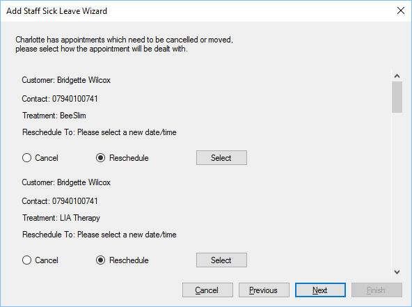

During step 3, which will only be shown if the staff member has appointments, you can
cancel or reassign the appointments.

At this stage you can contact the customers to offer to reschedule the appointment, or cancel
it, if you click the select button a new window will open which will bring up a list of
appointments slots, at a similar time, that can be used: